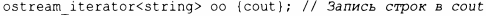
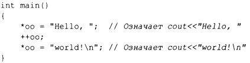
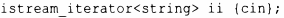
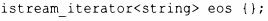
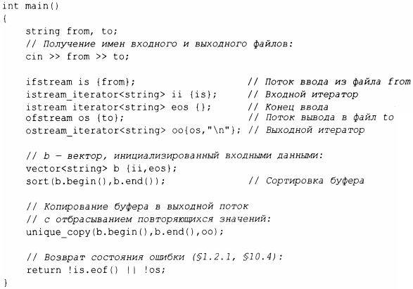
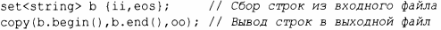
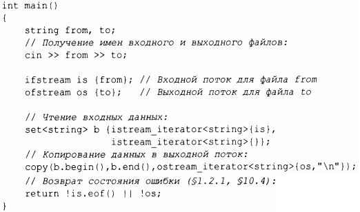

⇐12.3 Типы итераторов 12.5 Предикаты⇒
Итераторы представляют собой общую полезную концепцию для обработки последовательностей элементов в контейнерах. Однако контейнеры - это не единственное место, где мы находим последовательности элементов. Например, входной поток создает последовательность значений, и мы записываем последовательность значений в выходной поток. Следовательно, понятие итераторов может быть с пользой применено для ввода и вывода.
Чтобы создать ostream_iterator, нужно указать, какой поток будет использоваться, и тип объектов, которые будут в него записываться. Например:
Результатом присваивания значения *оо является запись присваиваемого значения в cout. Например:
Это еще один способ записи канонического сообщения в стандартный вывод. Запись ++оо представляет собой имитацию записи в массив через указатель.
Аналогично istream_iterator позволяет рассматривать входной поток как контейнер, предназначенный только для чтения. Здесь мы также должны указать используемый поток и тип ожидаемых значений:
Входные итераторы используются в паре, представляющей последовательность, так что мы должны предоставить istream_iterator для указания конца ввода. Это делает istream_iterаtor по умолчанию:
Как правило, istream_iterator и ostream_iterator не используются непосредственно. Вместо этого они передаются алгоритмам в качестве аргументов. Например, мы можем написать простую программу, которая читает файл, сортирует прочитанные слова, удаляет дубликаты и записывает результат в другой файл:
ifstream-этo поток istream, который может быть присоединен к файлу, а ofstream - это поток ostream, который может быть присоединен к файлу (§10.7). Второй аргумент ostream_iterator используется для разграничения выходных значений.
На самом деле эта программа длиннее, чем она должна быть. Мы читаем строки в vector, затем выполняем sort (),а затем записываем их, исключая дубликаты. Более элегантное решение заключается в том, чтобы вообще не хранить дубликаты. Это можно сделать, сохранив строки в множество, которое не сохраняет дубликаты и хранит свои элементы в упорядоченном виде (§ 11.4). Таким образом, мы могли бы заменить две строки, использующие вектор, одной, использующей множество, и заменить unique_сору() более простой функцией сору ( )
Мы используем имена ii, eos и оо по одному разу, так что программу можно сократить еще сильнее:
Улучшает ли это последнее упрощение удобочитаемость - вопрос вкуса и опыта.